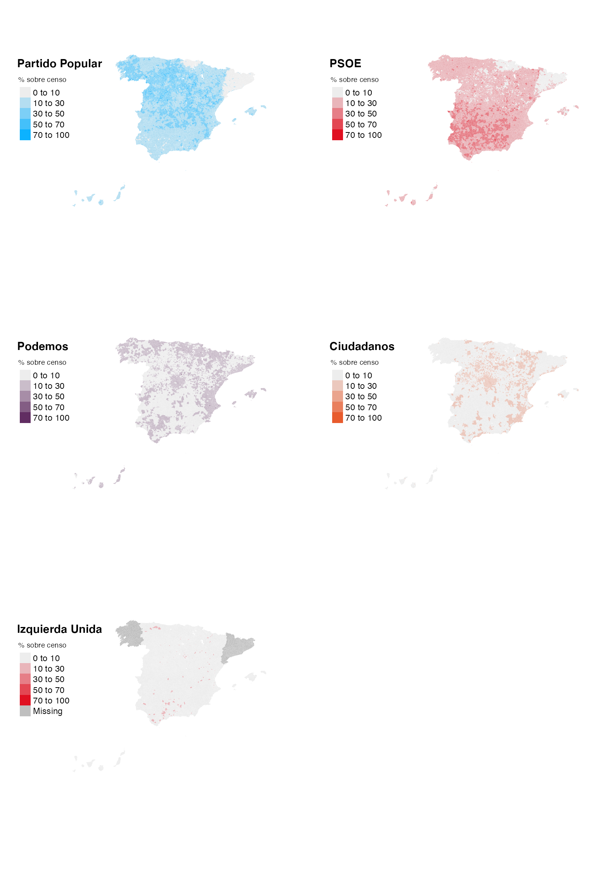

Using infoelectoral to make electoral maps
municipios.RmdInstall and load the packages
Install infoelectoral and load the packages needed.
Download the results
Download some results. In this case we download the election for Congress of decembre 2015.
results <- municipios("congreso", "2015", "12") # Descargo los datosImport the geometries
Import the geometry shapes for the municipalities using mapSpain.
Recode the party names
Since most parties have different names throughout the country, you
need to recode them to group their results. You can use the column
code.nacional included in the resulting
data.frame that indicates the grouping party code at the
national level. After that you’ll have to create the complete
municipality code (LAU_CODE) for the merge with the
sf object and transform the data from long to wide
format.
siglas_r <- results %>%
group_by(codigo_partido_nacional) %>%
summarise(siglas_r = siglas[1]) %>%
filter(siglas_r %in% c("PP", "PSE-EE (PSO", "PSOE", "PODEMOS-AHA",
"PODEMOS-COM", "PODEMOS-En", "C´s", "EN COMÚ",
"IU-UPeC", "IULV-CA,UPe")) %>%
mutate(siglas_r = case_when(
siglas_r %in% c("PODEMOS-COM", "PODEMOS-En", "EN COMÚ", "PODEMOS-AHA") ~ "Podemos",
siglas_r == "PSE-EE (PSO" ~ "PSOE",
siglas_r == "C´s" ~ "Cs",
siglas_r == "IULV-CA,UPe" ~ "IU",
TRUE ~ siglas_r
))
results <- merge(results, siglas_r, by = "codigo_partido_nacional")
results <- results %>%
mutate(
# Construyo la columna que identifica al municipio (LAU_CODE)
LAU_CODE = paste0(codigo_provincia, codigo_municipio),
# Calculo el % sobre censo
pct = round((votos / censo_ine ) * 100, 2)
) %>%
# Selecciono las columnas necesarias
select(codigo_ccaa, LAU_CODE, siglas_r, censo_ine, votos_candidaturas, pct) %>%
# Transformo los datos de formato long a wide
pivot_wider(names_from = "siglas_r", values_from = "pct")Merge the data and the geometries
With the LAU_CODE column merge the data with the
geomtries of the municipalities. Since the Canary Island are too far
away you are going to need to get them closer to the Iberian
Peninsula.
Visualize
At last, we may use tmap or even ggplot to visualize the maps. In this case we use the formar because of it’s easier to create facets.
colores5 <- list(c("#ededed", "#0cb2ff"), # PP
c("#ededed", "#E01021"), # PSOE
c("#ededed", "#612d62"), # Podemos
c("#ededed", "#E85B2D"), # Cs
c("#ededed", "#E01021")) # IU
breaks <- c(0,10,30,50,70,100)
library(tmap)
mapa <- tm_shape(shp) +
tm_polygons(col = c("PP", "PSOE", "Podemos", "Cs", "IU"), style = "fixed",
palette = colores5, breaks = breaks,
title = "% sobre censo",
border.alpha = 0, lwd = 0, legend.show = T, legend.outside = T) +
tm_layout(between.margin = 5, frame = FALSE,
title = c("Partido Popular", "PSOE", "Podemos", "Ciudadanos", "Izquierda Unida"),
title.fontface = "bold") +
tm_legend(legend.text.size = 1,
legend.title.size = 1) +
tm_facets(sync = TRUE, ncol = 2)
mapa